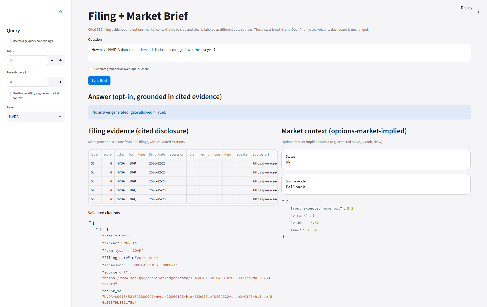
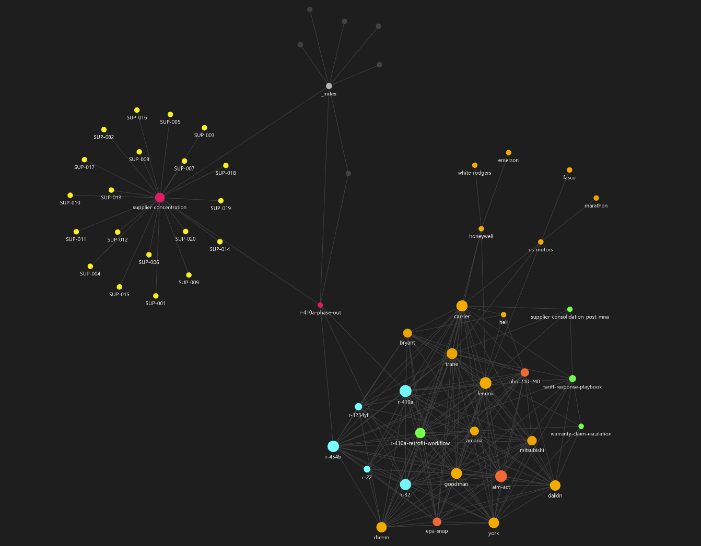

Python · SEC EDGAR · Hybrid Retrieval · Citation Validation · Evals
A point-in-time research platform that answers analyst questions from 10-K, 10-Q, 8-K, and EX-99 disclosure, with every claim tied to a validated inline citation and an options-market context panel kept in a separate, clearly labeled block so retrieved and market-implied values are never merged. Ingestion runs on idempotent SEC pulls with section-aware chunking, and a validator fails closed on any citation the retrieved evidence does not support. Over a 12 ticker corpus of roughly 6,300 chunks, offline lexical retrieval reaches a 0.86 section hit rate and answers score 1.00 citation validity, with zero hallucinated or uncited claims.

Python · Claude Agent Loop · Hybrid Retrieval · Evals
A retrieval system that answers operational questions for an HVAC parts distributor. It ingests manufacturer bulletins, regulatory filings, supplier emails, and SOPs into a knowledge base where every answer carries an inline citation to the document it came from. On a 30 question evaluation set, hybrid retrieval reaches 0.97 recall@5 and the agent loop reaches 0.98 citation recall.

TypeScript · Three.js · React · Graph Modeling
An interactive 3D globe that maps the AI supply chain as a layered graph running from power grids and fabs through advanced packaging, data centers, and model labs. Bottlenecks such as CoWoS packaging capacity and grid equipment lead times are modeled directly, so selecting one highlights everything downstream that depends on it. Every node and edge traces to a public, dated source.